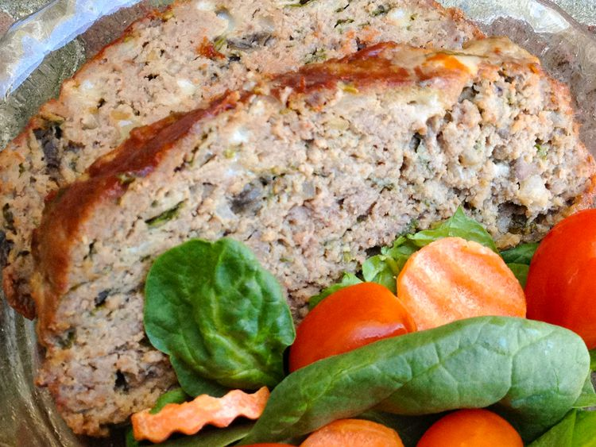

Home
Meatloaf

Description
This meatloaf is absolutely divine! This recipe has a slightly different combination
of ingredients compared to your usual meatloaf. Ground deer meat is used along with blue cheese,
mushrooms, and spinach.
Ingredients
- 2 eggs
- 1 cup finely chopped fresh spinach
- 0.5 cup sliced fresh mushrooms
- 0.5 cup plain bread crumbs
- 0.5 small yellow onion, finely chopped
- 1/3 cup 2% milk
- 1/3 cup crumbled blue cheese
- 2 tablespoons reduced-sodium Worcestershire sauce
- 1 tablespoon minced garlic
- 0.25 teaspoon cayenne pepper
- 1 pinch dried oregano
- 1 pinch dried basil
- salt and ground black pepper to taste
- 1.5 pounds extra-lean ground beef (or deer meat)
Steps
-
Preheat the oven to 350 degrees F (175 degrees C). Grease a loaf pan.
-
Mix eggs, spinach, mushrooms, bread crumbs, onion, milk, blue cheese, Worcestershire
sauce, garlic, cayenne pepper, oregano, basil, salt, and black pepper together in a
large bowl. Add ground beef and mix thoroughly with your hands; pack into the prepared
loaf pan.
-
Bake in the preheated oven until no longer pink in the center, 45 to 60 minutes. An
instant-read thermometer inserted into the center should read at least 160 degrees F
(70 degrees C).